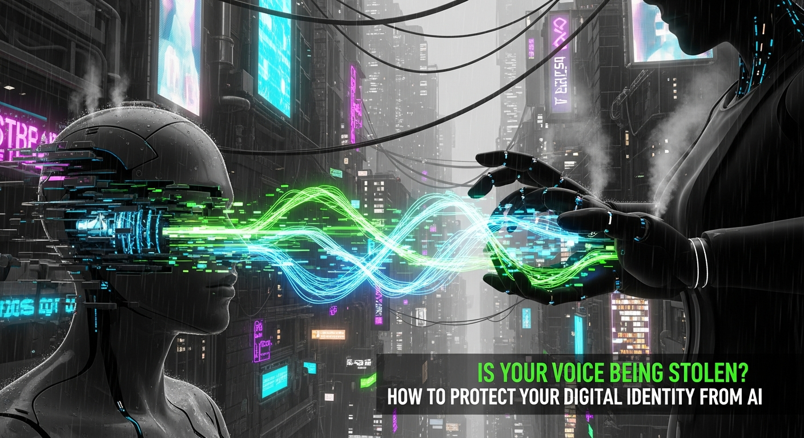

In an era where our digital footprints extend far beyond text and images, a new and profoundly personal threat has emerged: the theft and manipulation of our very voices. Artificial Intelligence, once a tool of science fiction, now possesses the chilling capability to mimic human speech with astonishing accuracy, transforming a few seconds of audio into a potent weapon against our digital identity and personal security. This isn't merely about inconvenient spam calls; it's about sophisticated deepfakes that can impersonate loved ones, defraud businesses, and erode the fundamental trust we place in the spoken word. The question is no longer if your voice can be stolen, but how easily it can be replicated and what devastating consequences such a breach can unleash. Understanding this evolving threat is the first, critical step in safeguarding a part of your identity you might never have considered vulnerable until now.
The landscape of digital security is shifting dramatically, with the human voice emerging as an unexpected battleground. For decades, voice synthesis was rudimentary, producing robotic, unnatural tones that were easily distinguishable from genuine human speech. Fast forward to today, and the advancements in Artificial Intelligence have shattered those limitations, ushering in an era where voice cloning technology can generate incredibly realistic, emotionally nuanced, and contextually appropriate synthetic speech from mere snippets of audio. This isn't just an academic curiosity; it's a rapidly weaponized capability that poses profound risks to individuals, businesses, and even national security.
Voice cloning, often a component of broader "deepfake" technology, refers to the process of using AI algorithms to analyze and replicate the unique characteristics of a person's voice – including their timbre, pitch, cadence, accent, and speech patterns. With as little as a few seconds of recorded audio, sophisticated AI models can learn these vocal fingerprints and then generate entirely new sentences in that person's voice. The source material can be anything from public social media videos, podcasts, voicemails, interviews, or even brief conversations. The accessibility of these tools is also a significant concern; while high-fidelity cloning once required specialized expertise and expensive equipment, open-source libraries and increasingly user-friendly commercial platforms are making this technology available to a wider range of actors, both legitimate and malicious.
The implications of this rise are far-reaching. We've witnessed early examples ranging from benign, albeit unsettling, uses like celebrity voice changers to more nefarious applications such as fraudulent calls. Imagine receiving an urgent call from what sounds exactly like your child, parent, or spouse, pleading for immediate financial help due to an emergency. The emotional leverage of a familiar voice, combined with the urgency of the situation, can bypass rational thought, leading victims to transfer funds or divulge sensitive information before verifying the caller's true identity. This psychological manipulation is precisely what makes AI voice deepfakes so dangerous; they exploit our inherent trust in the voices of those we know and love.
Beyond individual scams, the threat extends to corporate espionage, political disinformation campaigns, and even identity theft on a grander scale. A cloned voice could be used to impersonate a CEO to authorize fraudulent wire transfers, to spread false information in a political campaign, or to gain access to voice-authenticated systems. The sheer realism of these synthetic voices means that traditional methods of discerning authenticity are becoming obsolete. The human ear, accustomed to detecting subtle inconsistencies, is often no match for an AI trained on vast datasets of human speech. As the technology continues to improve, the line between authentic and artificial will blur to an indistinguishable degree, challenging our very perception of reality and demanding a new paradigm of digital vigilance and protection.
Understanding the mechanics behind AI voice theft is crucial for appreciating the depth of the threat. It’s not magic, but rather a sophisticated application of machine learning, deep learning, and advanced signal processing. The process typically involves several key stages, each contributing to the chillingly realistic output that can deceive even the most discerning listener.
The journey begins with **data collection**. To clone a voice, an AI model needs samples of the target's speech. The quality and quantity of these samples significantly impact the fidelity of the clone. While earlier models required hours of high-quality audio, modern AI can achieve impressive results with as little as a few seconds or minutes of speech. This audio data can be harvested from a multitude of publicly available sources: social media videos (TikTok, Instagram, YouTube), podcasts, news interviews, recorded conference calls, voicemails, or even snippets from online gaming sessions. The more varied the emotional range, pitch, and cadence in the collected samples, the more robust and versatile the resulting voice model will be.
Once collected, this audio data is fed into **AI models**, often based on deep neural networks. Prominent architectures used in voice cloning include Generative Adversarial Networks (GANs), Variational Autoencoders (VAEs), and transformer models, such as Tacotron and WaveNet. These models work by analyzing the intricate patterns within the voice samples. They deconstruct the speech into its fundamental components: the unique timbre (or tone color), the precise pitch variations, the rhythm and pace (prosody), the accent, and even the subtle emotional inflections. Essentially, the AI learns a "fingerprint" of the voice, not just what is being said, but *how* it is being said.
The **training process** involves feeding vast amounts of speech data to these neural networks. For example, a model might first be trained on a massive dataset of general human speech to understand the fundamental mechanics of language and sound. Then, through a technique called "transfer learning," it is fine-tuned with the specific audio samples of the target voice. This allows the AI to adapt its general knowledge to the unique characteristics of the individual's voice, making it sound distinct and personal. The model learns to map text input to the acoustic features that define the target voice, enabling it to generate novel speech that sounds authentic.
Finally, the **synthesis stage** occurs. Once the model is trained, a user can input any text, and the AI will generate an audio file speaking that text in the cloned voice. This process is often categorized into Text-to-Speech (TTS) voice cloning. More advanced techniques can even perform voice-to-voice (VTS) cloning, where a source voice speaks, and the AI instantly transforms it into the target voice while preserving the original speech's emotional dynamics. The output is a highly convincing audio track that, to the untrained ear, is indistinguishable from the original speaker. The relentless progress in computational power and algorithmic sophistication means these processes are becoming faster, more efficient, and capable of producing ever more lifelike results, making the act of discerning a real voice from a synthetic one an increasingly difficult, if not impossible, task for humans alone.
The theoretical capabilities of AI voice cloning translate into a chilling array of real-world dangers, threatening not just our financial well-being but also the very fabric of trust in our digital interactions. The insidious nature of these threats lies in their ability to exploit our most fundamental human connections and vulnerabilities, making them exceptionally potent tools for malicious actors.
Perhaps the most immediate and widely reported danger is **financial fraud**. Scammers are increasingly employing cloned voices in sophisticated schemes. A common tactic is the "grandparent scam," where fraudsters impersonate a grandchild in distress, urgently requesting money for a fabricated emergency like bail, medical bills, or travel expenses. The emotional urgency, coupled with the familiar voice, often overrides a victim's natural caution, leading them to wire funds before verifying the story. Similarly, "CEO fraud" or "business email compromise" schemes are evolving to include voice deepfakes. An attacker might clone the voice of a company executive and call a finance department employee, authorizing a fraudulent wire transfer or requesting access to sensitive company data, bypassing traditional security protocols that rely on voice recognition or a sense of familiarity.
Beyond direct financial theft, AI voice cloning poses a significant threat to **identity theft and access control**. Many financial institutions, healthcare providers, and even smart home systems utilize voice biometrics as a form of authentication. A sophisticated voice clone could potentially bypass these security measures, granting unauthorized access to bank accounts, medical records, or personal devices. The erosion of trust in voice as a unique identifier could force a complete re-evaluation of how we secure sensitive information, potentially leading to more cumbersome multi-modal authentication methods or a complete abandonment of voice biometrics in high-stakes scenarios.
The potential for **reputational damage and disinformation** is also immense. Imagine a deepfake audio clip of a public figure, politician, or even a private individual saying something controversial, illegal, or morally reprehensible that they never uttered. Such clips, especially when amplified by social media, can quickly go viral, causing irreparable harm to reputations, inciting public outrage, or influencing elections. The ability to fabricate audio evidence undermines the credibility of any audio recording, making it difficult to discern truth from fabrication in legal proceedings, journalistic investigations, and political discourse. This widespread skepticism can lead to a dangerous state of "truth decay," where objective reality becomes increasingly difficult to establish.
Furthermore, the psychological toll on individuals can be severe. The experience of hearing your own voice, or the voice of a loved one, used to perpetrate a lie or a scam can be deeply unsettling, leading to feelings of violation, paranoia, and a profound sense of insecurity. The constant need to second-guess every phone call or voice message can erode personal trust and create significant anxiety. As AI voice cloning becomes more prevalent and harder to detect, the very notion of a "digital identity" becomes more fragile, demanding proactive and comprehensive strategies to protect not just our data, but the very essence of how we communicate and identify ourselves in the digital age.
Humanize your text and bypass any AI detector instantly with Undetectable AI.
BYPASS AI DETECTION NOWIn the face of increasingly sophisticated AI voice cloning threats, a proactive and multi-layered defense strategy is absolutely essential. Protecting your sonic identity requires a combination of technological vigilance, behavioral adjustments, and a heightened sense of skepticism in digital interactions. It’s no longer enough to simply secure your passwords; you must now consider the vulnerability of your unique vocal signature.
One of the most fundamental steps is **digital footprint management**. Every public audio recording of your voice – whether it's a social media video, a podcast appearance, a public interview, or even a lengthy voicemail greeting – provides valuable data for AI models. While it's impossible to completely erase your past digital presence, you can significantly limit future exposure. Be judicious about what audio content you share publicly. Review privacy settings on social media platforms, ensuring that your content is only accessible to trusted circles, or consider limiting audio-only posts. Think twice before participating in online challenges or trends that encourage extensive voice recordings, as these can be goldmines for data harvesters. Regularly audit your online presence for any old audio files that might be publicly accessible and remove them if possible.
**Strengthening your authentication methods** is another critical defense. Where possible, move away from voice biometrics as a primary or sole authentication factor for sensitive accounts. Instead, prioritize strong, hardware-based multi-factor authentication (MFA) methods like FIDO2 security keys, authenticator apps (e.g., Google Authenticator, Authy), or even SMS codes (though these are less secure than app-based MFA). If a service absolutely requires voice verification, understand its limitations and ensure it's coupled with other robust authentication factors. Never rely solely on voice to protect your bank accounts, email, or other critical digital assets.
**Vigilance and skepticism** are perhaps your most powerful personal tools. Develop a habit of critical thinking, especially when receiving unusual or urgent requests via phone, even if the voice sounds familiar. If you receive a call from a "loved one" requesting money or sensitive information, establish a pre-arranged "codeword" or a specific question only they would know the answer to. This simple, agreed-upon verification method can instantly expose a deepfake. If you cannot reach them on a known, trusted number, or if they claim their usual phone is broken, be extremely suspicious. Always attempt to verify the request through an alternative, known communication channel (e.g., text message, a different phone number, or a video call) before taking any action. Educate your family members, especially children and elderly relatives, about these scam tactics, as they are often primary targets.
Finally, utilize **secure communication channels**. For sensitive conversations, prioritize end-to-end encrypted messaging and calling apps like Signal or WhatsApp. These platforms offer a higher degree of privacy and reduce the risk of your voice data being intercepted and used for cloning purposes. For business communications, employ video conferencing where visual verification can add an extra layer of security, making deepfake audio more challenging to deploy without corresponding visual manipulation. By consciously managing your digital voice footprint, reinforcing your authentication layers, and cultivating a healthy skepticism, you can significantly bolster your defenses against the growing threat of AI voice theft and protect your invaluable sonic identity.
As the threat of AI voice theft grows more sophisticated, so too do the tools and technologies designed to combat it. While no single solution offers a complete panacea, a combination of specialized software, robust security practices, and emerging privacy technologies can significantly enhance your protection against voice cloning and deepfakes. Understanding these tools empowers individuals and organizations to build stronger defenses.
One of the most critical categories of defense tools involves **deepfake detection software**. These advanced systems are specifically engineered to analyze audio (and video) files for subtle anomalies that indicate synthetic generation. Companies like Pindrop, Sensity AI, and DeepMedia are at the forefront of this technology. Their platforms utilize complex algorithms and machine learning models to examine acoustic properties, spectral characteristics, metadata, and even psychological cues within a voice recording. They look for inconsistencies in pitch, intonation, background noise, and even minute, almost imperceptible digital artifacts that are often present in AI-generated speech. For businesses, integrating such detection capabilities into their call centers or fraud detection systems can be a powerful deterrent, automatically flagging suspicious voice interactions that might otherwise bypass human scrutiny. For individuals, while direct access to enterprise-grade tools is limited, increased awareness of these capabilities helps validate the need for vigilance and skepticism.
While voice biometrics present a double-edged sword (potentially vulnerable to cloning but also a security measure), some advancements aim to make them more robust. **Multi-modal biometrics**, for instance, combine voice authentication with other factors like facial recognition, fingerprint scans, or behavioral biometrics (e.g., typing patterns). This makes it exponentially harder for an attacker using only a voice clone to gain access. Companies like Nuance Communications and VoiceIt Technologies are continuously refining their biometric solutions, often incorporating liveness detection features that attempt to verify if the voice is coming from a live human rather than a recording or synthesis. However, relying solely on voice biometrics for critical security remains risky without these added layers of verification.
Emerging technologies also include **audio watermarking and fingerprinting**. These techniques involve embedding imperceptible digital codes or unique identifiers within audio recordings. These "watermarks" can then be detected by specialized software, confirming the origin, authenticity, or even the synthetic nature of an audio file. While still largely in the research and development phase for widespread public use, companies like Veritone are exploring how these methods could help trace the provenance of digital media, making it harder for malicious actors to anonymously spread deepfake audio. The goal is to create a verifiable chain of custody for digital content, much like a digital signature for documents.
Furthermore, **privacy-enhancing technologies (PETs)** are being developed to proactively protect voices. Some research focuses on "voice privacy masking" or "voice obfuscation" techniques. These tools subtly alter a person's voice characteristics in real-time, making it harder for AI models to accurately clone it, while still preserving intelligibility for human listeners. This could allow individuals to speak freely without inadvertently contributing to their own voiceprint database for potential misuse. While not yet widely available, these innovations represent a promising future direction for personal voice protection.
Finally, the most fundamental tools remain **secure communication apps** like Signal and **WhatsApp** (with end-to-end encryption enabled). These applications protect the content of your calls and messages from interception, reducing the likelihood of your voice data being captured by third parties for cloning purposes. Coupled with robust antivirus and antimalware solutions on your devices, which prevent malware from secretly recording your audio, these foundational security practices form the bedrock of personal digital voice protection.
The rapid advancement of AI voice cloning technology has thrust us into a complex and largely uncharted legal and ethical landscape. Existing laws, often drafted long before the advent of sophisticated synthetic media, struggle to adequately address the novel challenges posed by AI voice theft. This creates a significant gap, leaving individuals and organizations vulnerable and demanding urgent attention from policymakers, legal scholars, and ethicists worldwide.
One of the primary legal challenges is the **lack of specific legislation** directly targeting AI voice cloning or deepfake audio. While some jurisdictions have begun to introduce laws concerning deepfake *video*, audio deepfakes often fall into a legal gray area. Prosecutors and victims are frequently forced to rely on existing statutes designed for different types of offenses, such as fraud, identity theft, defamation, impersonation, or harassment. While these laws can sometimes be applied, they may not fully capture the unique nature of the harm caused by voice cloning, particularly when it comes to reputational damage or psychological distress that doesn't directly involve financial loss. The ambiguity makes prosecution difficult and inconsistent, emboldening malicious actors.
The concept of **right to publicity or personality rights** is gaining traction as a potential legal avenue. Many jurisdictions recognize an individual's right to control the commercial use of their name, image, and likeness. The question now is whether this right extends to one's unique vocal signature. If a celebrity's voice is cloned for an unauthorized advertisement, or a public figure's voice is used to spread false information, can they sue for infringement of their personality rights? Legal precedents are slowly being established, but a clear, universally accepted legal framework for voice as a protected attribute of identity is still evolving.
In summary, staying ahead of these trends is the key to business longevity and security. By following this guide, you maximize your growth and ensure a stable digital future.
Don't wait for the headlines. Our Private Telegram Channel delivers real-time AI security updates and digital wealth strategies before they go viral. Stay protected. Stay ahead.
⚡ JOIN THE 1% NOW